系统梳理「智能体推理」的基础能力、自我进化与多智能体协作三大维度——连接思想与行动的路线图
推理（reasoning）是支撑推断、问题求解与决策的根本认知过程。尽管大语言模型（LLMs）在封闭世界设定下（如数学与代码的标准基准）展现出强劲的推理能力，它们在开放、动态的环境中却举步维艰。智能体推理（agentic reasoning）的兴起标志着一种范式转变：它通过把 LLM 重构为能够规划、行动、并通过持续交互来学习的自主智能体，架起了「思想」与「行动」之间的桥梁。本综述沿着三个互补的维度，对智能体推理给出系统化的路线图。首先，我们通过三个层次刻画环境动态：基础型智能体推理建立核心单智能体能力（规划、工具使用、搜索），运行于稳定环境；自我进化型智能体推理审视智能体如何通过反馈、记忆与适应在演化环境中精炼这些能力；群体多智能体推理将智能扩展至协作场景，多个智能体协调角色、共享知识、追求共同目标。在所有层次上，我们通过区分两种系统约束与优化设定来进行分析：上下文推理（in-context reasoning）通过结构化编排与自适应工作流设计来扩展测试时交互，与训练后推理（post-training reasoning）相对——后者通过强化学习与有监督微调来优化行为。我们进一步回顾并梳理了智能体推理框架在真实应用与基准中的情况，涵盖科学、机器人、医疗、自主研究与数学，说明不同推理机制如何在这些领域被实例化与评估。本综述将智能体推理方法综合为统一的路线图，连接思想与行动，为跨越环境动态、优化设定与智能体交互设定的智能体系统提供可操作的指导。最后，我们勾勒开放挑战与未来方向，指明智能体推理已如何发展，以及前方仍待解决的问题：个性化、长程交互、世界模型、可扩展的多智能体训练，以及面向真实部署的治理框架。
推理处于智能的核心，使逻辑推断、问题求解与决策能够在交互与动态设定中展开。大语言模型（LLMs）已在数学问题求解与代码生成等封闭世界领域取得显著进展。经验上，显式化中间推理的技术——如思维链（Chain-of-Thought）提示、分解（decomposition）与程序辅助求解——已大幅提升推理性能 [1–4]。然而，这些方法通常假设静态上下文与短程推理。传统 LLM 缺乏在信息随时间演化的开放环境中行动、适应或改进的机制。
在本综述中，我们在智能体推理框架下对这种演化进行系统化：LLM 不再被动地生成序列，而是被重构为自主推理智能体，通过与环境持续交互来规划、行动与学习。这种重构将推理与行动统一起来，使推理成为感知、规划、决策与验证的组织原则。诸如 ReAct [5] 之类的系统将深思与环境影响交错，工具使用框架支持自主的 API 调用，而基于工作流的智能体动态地编排子任务与可验证动作 [5–7]。从概念上看，这类似于从静态、一次性推断到不确定性下的序贯决策的转变。与简单的输入—输出映射不同，该范式要求智能体在长程上规划、在部分可观测中导航，并通过反馈主动改进 [8–10]。
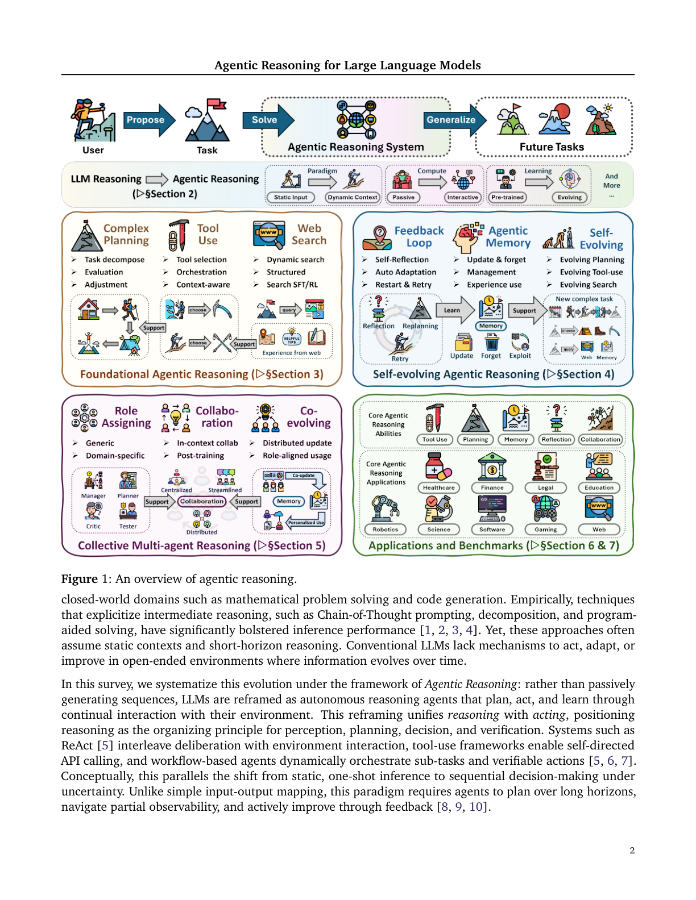
传统的大语言模型推理通常被形式化为对静态输入的一次性或少样本预测任务。这些模型依赖扩展测试时计算量，通过增大模型规模或推理预算来提升精度，却无法交互、记忆或适应变化的目标。提示工程、上下文学习（in-context learning）与思维链提示等方法使推理更加显式，但传统 LLM 仍是在固定提示内运作的被动序列预测器。
相比之下，智能体推理强调扩展测试时交互（test-time interaction）。智能体系统不只是依赖内部参数，而是通过行动进行推理：调用工具、探索替代方案、更新记忆、整合反馈。这将推断转变为包含决策步骤、反思与经验学习的迭代过程，使推理成为一个连接模型、记忆与环境的动态环路。
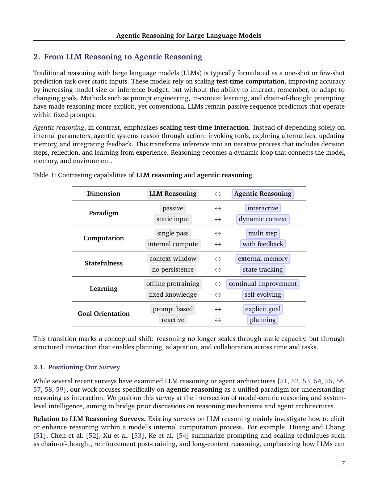
这一转变标志着一个概念性转折：推理不再通过静态容量来扩展，而是通过能够跨时间与任务进行规划、适应与协作的结构化交互来扩展。
尽管近期若干综述考察了 LLM 推理或智能体架构 [51–59]，我们的工作专门聚焦于智能体推理作为一个统一范式——将推理理解为交互。我们将本综述定位于以模型为中心的推理与系统级智能的交叉点，旨在桥接此前关于推理机制与智能体架构的讨论。与 LLM 推理综述的关系：现有综述主要研究如何在模型内部计算过程中引发或增强推理（如思维链、强化训练后、长上下文推理），强调 LLM 如何通过学习更好的推理；但这些工作通常停留在静态推断设定中。与 AI 智能体综述的关系：若干综述从架构或系统视角探讨基于 LLM 的智能体（强化学习、规划、工具使用），我们的视角与之互补——我们聚焦于这些架构所支撑的推理过程。总之，本综述提供了一个以推理为中心的智能体透镜。
本小节将静态语言建模到智能体推理的过渡形式化。为与引言所述三层维度（基础、自我进化、协作）对齐，我们在单一控制论框架下统一这些能力。
智能体推理的形式化：潜空间视角。标准方法常将智能体的上下文与环境状态混为一谈。我们将环境建模为部分可观测马尔可夫决策过程（POMDP），并引入一个内部推理变量来显式化智能体策略的「思考—行动」结构。具体地，考虑元组 $\langle X, O, A, Z, M, T, \Omega, R, \gamma\rangle$，其中 $X$ 是潜在环境状态空间（智能体不可观测），$O$ 是观测空间（如用户查询、API 返回），$A$ 是外部动作空间（如工具调用、最终答案），$Z$ 是推理轨迹空间（如潜在计划，可选择性地以思维链形式语言化），$M$ 是智能体内部记忆/上下文空间（如交互历史的充分统计量）。$T$ 与 $\Omega$ 分别表示状态转移与观测核，$R$ 为奖励，$\gamma\in(0,1)$ 为折扣因子。
在时刻 $t$，智能体以历史 $h_t=(o_{\le t}, z_{<t}, a_{<t})$ 为条件（即先观测 $o_t$，再生成 $z_t$，然后 $a_t$）。等价地，历史可由内部记忆状态 $m_t\in M$ 概括。关键在于我们区分外部动作与内部推理，并将策略分解为：
这一分解凸显了智能体系统的核心转变：在承诺动作 $A$（行动）之前，先在 $Z$（思考）中执行计算。目标仍是最大化期望回报 $J(\theta)=\mathbb{E}_\tau\big[\sum_{t\ge 0}\gamma^t r_t\big]$。
上下文推理：推理时搜索。在此体制下，模型参数 $\theta$ 被冻结。智能体通过在 $Z$ 上搜索以最大化启发式价值函数 $\hat v(h_t,z)$ 来优化推理轨迹。我们将推断建模为选择一条轨迹 $\tau=(h_0,z_0,a_0,\dots)$。ReAct [5] 在交替的思维 $z$ 与动作 $a$ 上执行贪心解码；思维树（ToT [4]）及类 MCTS 方法将部分思维视为节点 $u\in U$，并搜索最优路径：
其中 $\hat v_\phi$ 是启发式评估器或验证器。这对应于在不更新策略参数情况下在 $Z$ 中规划。
训练后：策略优化。该范式优化 $\theta$ 以使策略与长程奖励（如正确性、安全性）对齐，包括推理模型（如 DeepSeek-R1 [60]）与学习—搜索系统（如 Search-R1 [27]、DeepRetrieval [61]）。虽然 PPO [62] 是标准，但基于组相对策略优化（GRPO）[63] 的方法被广泛用于推理任务。GRPO 通过从组相对奖励构造优势来消除价值网络。对于来自同一提示 $q$ 采样的 $G$ 个输出 $\{y_i\}_{i=1}^G$，常见的 GRPO 目标为：
其中 $\rho_i=\frac{\pi_\theta(y_i\mid q)}{\pi_{\theta_{\text{old}}}(y_i\mid q)}$，组归一化优势为 $\hat A_i=\frac{r_i-\mu}{\sigma+\delta}$，其中 $\mu=\frac{1}{G}\sum_j r_j$，$\sigma=\sqrt{\frac{1}{G}\sum_j(r_j-\mu)^2}$，$\delta>0$ 为数值稳定的小常数。先进方法如 ARPO [64]、DAPO [65] 扩展了该框架以处理稀疏奖励并提升复杂工具使用环境的稳定性。
群体智能：多智能体推理。我们将单智能体公式扩展到去中心化部分可观测多智能体设定（通常形式化为 Dec-POMDP）。核心区别在于将每个智能体的观测扩展为包含通信信道 $C$。对于 $N$ 个智能体的系统，联合策略 $\pi$ 由各策略 $\pi_i$ 组成，其中智能体 $i$ 的观测 $o_{i,t}$ 显式包含同伴生成的通信消息 $c_{-i,t-1}$。在智能体 MARL 中，通信不仅是信号传输，更是推理过程的延伸：一个智能体的外部动作可作为触发另一个智能体内部推理链的提示。AutoGen [66]、CAMEL [67] 代表具有固定策略的静态角色扮演；近期的智能体 RL 进展（如 GPTSwarm [68]、MaAS、通过 PPO/GRPO 训练的智能体 [69]）旨在优化这一联合推理分布。挑战从单智能体规划转向机制设计：优化通信拓扑与激励机制，使去中心化推理过程 $\pi_i^{\text{reason}}$ 朝向一致的全局目标，通常借助集中训练/分散执行（CTDE）范式来稳定协作行为的涌现。
自我进化智能体：元学习环路。基础型智能体在单幕（episode）内优化推理 $z$，自我进化型智能体则在幕间 $k=1,\dots,K$ 优化智能体系统本身。令 $S_k$ 表示可进化系统状态（如显式记忆、工具库或代码）。一个通用的元更新规则为：
其中 $F_k$ 表示环境反馈（奖励、执行错误），$S_k$ 为可进化状态。我们按 $S$ 的性质对自我进化分类：语言进化（Verbal Evolution）：$S$ 由文本反思或准则组成（如 Reflexion [14]）；程序进化（Procedural Evolution）：$S$ 由可执行工具或技能库组成（如 Voyager [36]）；结构进化（Structural Evolution）：$S$ 由智能体源代码或架构本身组成（如 AlphaEvolve [70]）。该框架将这些各异的方法统一为对显式记忆与产物的无梯度或有梯度优化步骤，闭合了经验与能力之间的环路。
智能体推理源于单个智能体的行为。在讨论适应与协作之前，我们先聚焦单个智能体如何通过三个核心组件将推理转化为结构化行动：规划、搜索与工具使用。在此设定下，智能体不是被动的文本生成器，而是自主的问题求解器——它制定计划、通过检索或环境搜索探索替代方案，并利用工具执行落地的操作。这些机制共同奠定了智能体推理的基础，将抽象的深思与可验证的行动连接起来。
一个典型的基础工作流可视为交错「规划（目标分解与任务构造）、工具使用（调用外部系统或 API 作用于世界）、搜索（为决策支持进行检索与探索）」的迭代循环。推理作为贯穿各阶段的组织原则，决定何时规划、检索什么、如何行动，将静态推断转化为交互式决策。通过分析这些组件，我们阐明结构化推理如何将静态 LLM 提升为自主、目标驱动的智能体。
规划是智能行为的核心组件，使智能体能够分解问题、排序决策，并以远见在复杂环境中导航。近期研究日益探索 LLM 语境下的规划，本文将其方法论风格分为六类（下文各小节）。
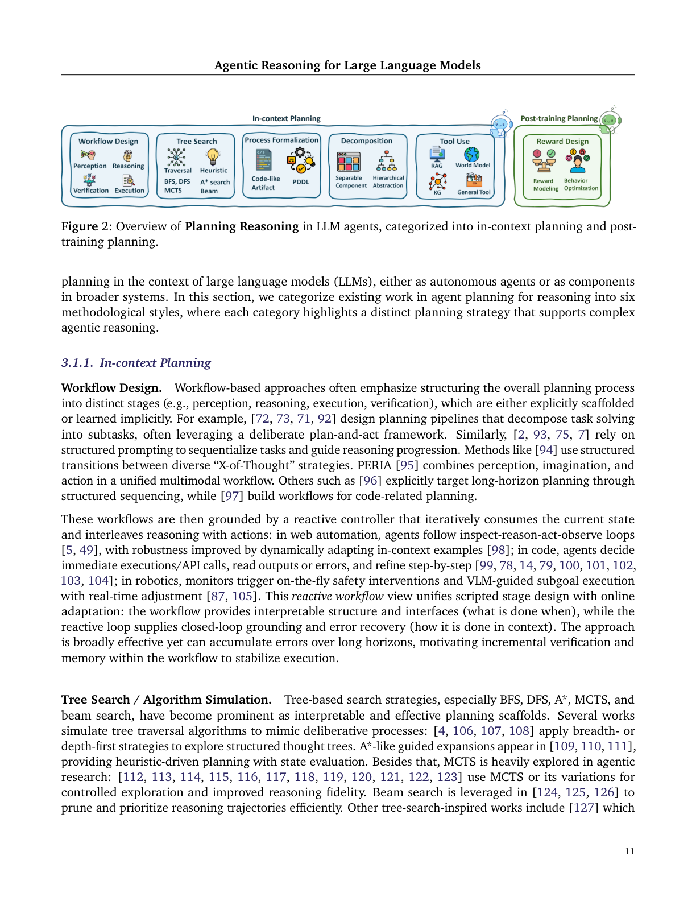
工作流设计。基于工作流的方法强调将整体规划过程结构化为不同阶段（如感知、推理、执行、验证），这些阶段或被显式搭建，或被隐式学习。例如 [72,73,71,92] 设计将任务求解分解为子任务的规划流水线；[2,93,75,7] 依赖结构化提示对任务排序并引导推理推进；[94] 在多种「X-of-Thought」策略间进行结构化转换；PERIA [95] 在统一多模态工作流中结合感知、想象与行动。另一些工作 [96] 通过结构化排序显式面向长程规划，[97] 构建面向代码规划的流水线。
这些工作流随后由反应式控制器支撑，其迭代消费当前状态并在推理与动作间交错：在 Web 自动化中，智能体遵循 inspect–reason–act–observe 循环 [5,49]；在代码中，智能体决定立即执行/API 调用、读取输出或错误并逐步精炼 [99,78,14,…]；在机器人中，监视器触发即时安全干预与 VLM 引导的子目标执行 [87,105]。这种反应式工作流视角将脚本化阶段设计与在线适应相统一。
树搜索 / 算法模拟。基于树的搜索策略（尤其 BFS、DFS、A*、MCTS、束搜索）已成为可解释且有效的规划支架。若干工作模拟树遍历算法以模仿深思过程：[4,106–108] 应用广度或深度优先策略探索结构化思维树；类 A* 引导式扩展出现于 [109–111]；MCTS 在智能体研究中被大量探索 [112–123]；束搜索用于 [124–126] 高效剪枝与优先化推理轨迹；[127] 使用学习型搜索策略，[128] 区分快速（反应式）与慢速（深思式）规划。
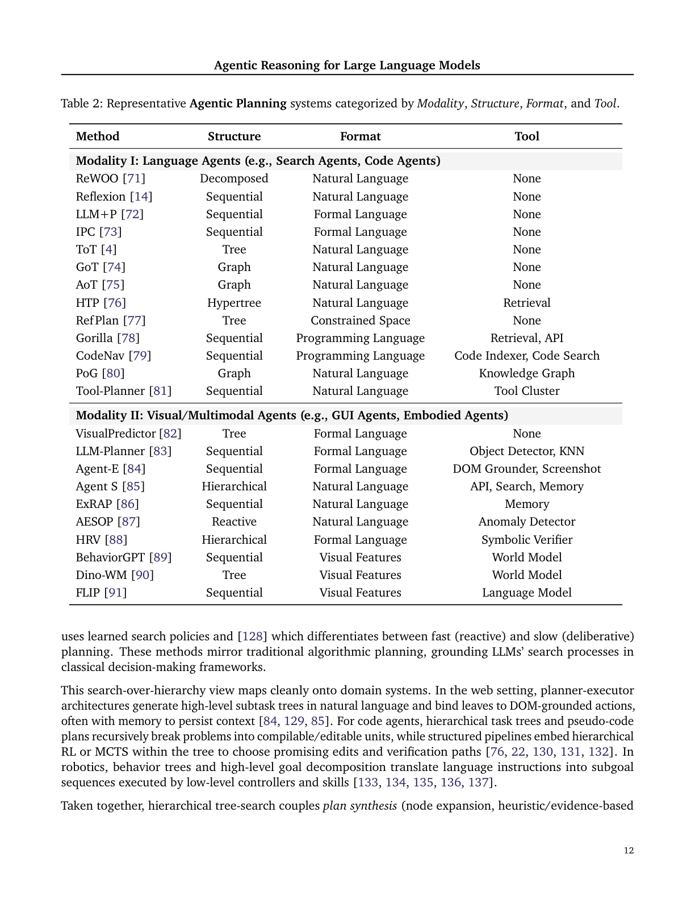
搜索—层级视图清晰地映射到领域系统：在 Web 中，规划者—执行者架构以自然语言生成高层子任务树，并将叶子绑定到 DOM 锚定的动作 [84,129,85]；在代码智能体中，层级任务树与伪代码计划递归地将问题分解为可编译/可编辑单元 [76,22,130–132]；在机器人中，行为树与高层目标分解将语言指令转化为由底层控制器与技能执行的子目标序列 [133–137]。
过程形式化。通过符号表示、编程语言或逻辑框架形式化规划，确保组合性、可解释性与泛化能力。[138–142] 将计划编码为类代码工件或 PDDL 程序；CodePlan [97] 强调用程序合成支撑长程推理。解耦 / 分解：ReWOO [71] 显式分离观测与推理模块；[76] 通过超树促进层级思维；[82] 用符号谓词抽象世界以减少规划负担。外部辅助 / 工具使用：知识增强框架 [80,88,…] 将结构化表示注入 LLM 上下文；RAG 式系统 [86,…] 检索相关知识支持持续指令规划；世界模型智能体 [112,138,…] 学习或利用环境模型进行基于模型的规划；HuggingGPT [7]、Tool-Planner [81] 等使用外部 API 或模块化工具链支撑规划执行。
奖励设计 / 最优控制。将规划作为优化，需要设计合适的奖励结构并用 RL 或控制论工具求解最优行为。Reflexion [14]、Reflect-then-Plan [77]、Rational Decision Agents [188] 引入基于效用的学习引导规划；最优控制在 [191–194] 中被显式处理，扩散模型下的轨迹优化见于 [195–197]；离线 RL 方法 [119,198,147] 利用预训练的动态或代价模型。控制论取向通过优化连续、结构化或学得奖励空间，补充了符号或启发式方法。
工具使用优化是智能体通过智能调用外部模块来增强其固有能力的能力，使智能体克服知识过时、无法精确计算或无法访问私有信息等局限。核心挑战在于智能体推理「何时使用工具、从工具库中选用哪个、以及如何生成有效调用」的能力。本节将现有工具使用优化方法 broadly 分为三种风格：上下文工具集成、训练后工具集成、以及基于编排的工具集成。
上下文示范范式是一种免训练的方法，在推理时赋予 LLM 新能力。该方法利用现代 LLM 卓越的上下文学习能力，通过直接在提示中提供精心构造的指令、示例与上下文信息，引导一个冻结的现成模型完成复杂任务。
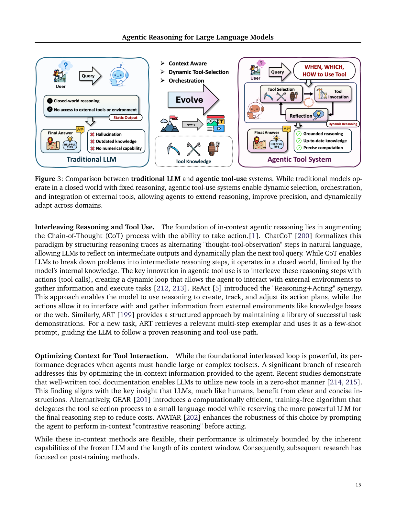
推理与工具使用的交错。上下文智能体推理的基础在于用「行动」能力增强思维链（CoT）过程。ChatCoT [200] 将推理轨迹结构化为自然语言交替的「思维—工具—观测」步骤，使 LLM 能反思中间输出并动态规划下一工具查询。ReAct [5] 引入了「推理+行动」的协同，模型用推理创建、追踪与调整行动计划，动作则让其与知识库或 Web 等外部环境交互。优化工具交互的上下文。GEAR [201] 将工具选择委托给小模型以降低成本；AVATAR [202] 在行动前提示智能体进行上下文「对比推理」以增强鲁棒性。这些方法灵活，但性能受限于冻结 LLM 的固有能力与上下文窗口长度，因此后续研究转向训练后方法。
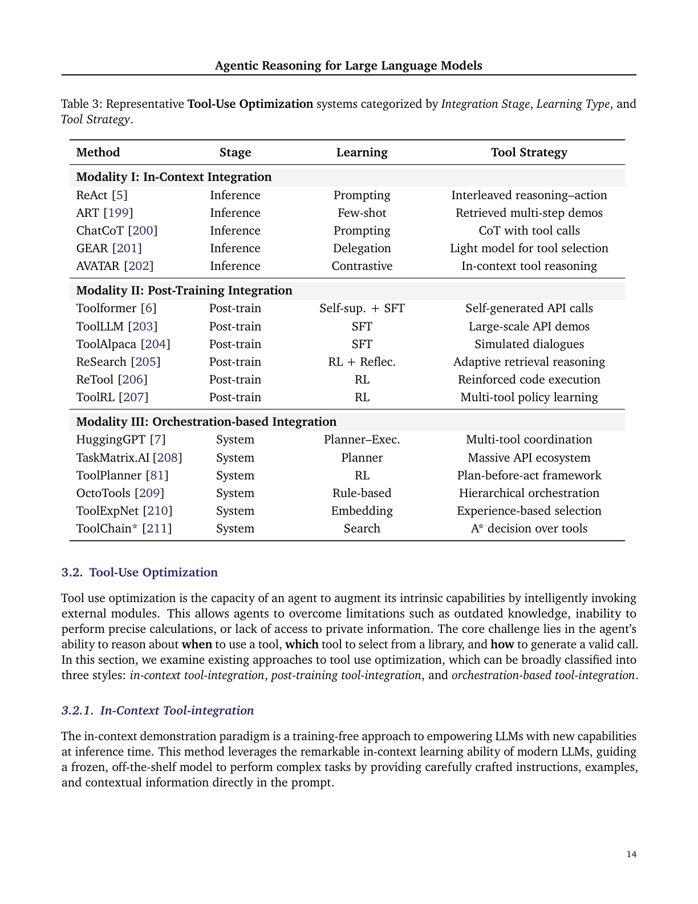
结合训练后技术的工具集成已成为解决 LLM/LRM 固有局限（知识过时、计算精度有限、多步推理浅薄）的关键策略。通过习得如何与外部工具交互，推理模型能动态获取最新信息、执行精确的符号或数值计算，并将复杂任务分解为有工具辅助的推理步骤。
通过 SFT 引导工具使用。早期工作 [5,6,203,204,…] 主要在精心构造的工具使用推理步骤上应用有监督微调（SFT），训练模型模仿搜索查询、代码执行或 API 调用的示范。Toolformer [6] 引入自监督框架，让 LLM 在无标注文本中生成、验证并保留有用 API 调用；ToolLLM [203] 将 SFT 扩展到 16,000+ 真实 API；ToolAlpaca [204] 通过多智能体模拟自动构造多样化工具集与多轮对话。通过 RL 掌握工具使用。近期研究 [234,207,235,205,…] 在训练后使用强化学习（RL），使模型通过结果驱动的奖励精炼工具使用策略，学习何时、如何、选用哪些工具。SWE-RL [235] 在大规模软件演化数据上优化代码编辑策略；ReTool 将实时代码执行融入推理 rollout；ToolRL [207] 通过原则性奖励设计将范式推广到多样化工具。
在真实应用中，复杂系统中的工具使用常超越单模型、单工具设定，需要在多个工具间编排以完成复杂任务。HuggingGPT [7] 用集中式智能体规划调用哪些工具及何时调用；TaskMatrix.AI [208] 将基础模型与数百万 API 连接；ToolkenGPT [209] 将每个工具编码为特殊 token。智能体工具编排流水线（如 ToolPlanner [81]、OctoTools [209]、Chain-of-Tools [247]）大多遵循「先计划后行动」策略。工具表示方面，ToolExpNet [210] 将工具及其使用经验建模为网络；ToolChain* [211] 将整个工具动作空间构建为决策树并应用 A* 搜索。
单智能体智能体 RAG（检索增强生成）系统将推理与控制嵌入一个集中式智能体，由其掌管整个检索—生成循环。与传统的固定一次性检索 RAG 不同，智能体 RAG 根据实时推理需求动态控制何时、检索什么、以及如何检索，使模型能在推断中途调整检索策略、精炼查询并更好地整合多源证据。按智能体在推理中如何选择、精炼与整合检索内容，单智能体智能体 RAG 分为三种架构风格：上下文式、训练后式与结构增强式。
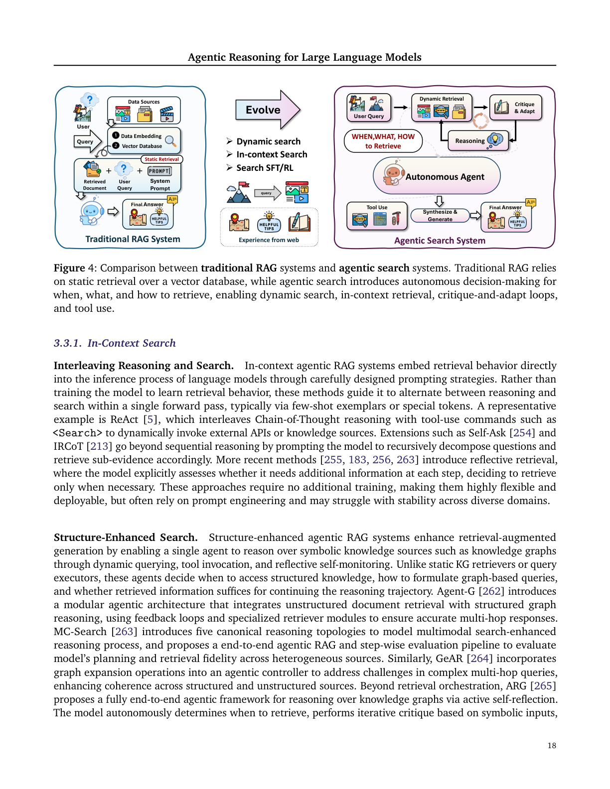
推理与搜索的交错。上下文智能体 RAG 系统通过精心设计的提示策略，将检索行为直接嵌入语言模型的推断过程。ReAct [5] 在思维链推理与 <Search> 等工具命令间交错；Self-Ask [254]、IRCoT [213] 递归分解问题并检索子证据；近期方法 [255,183,256] 引入反思式检索，模型在每步显式评估是否需要额外信息。结构增强搜索。结构增强智能体 RAG 通过动态查询、工具调用与反思式自监控，使单一智能体能在知识图谱等符号知识源上推理。Agent-G [262] 将非结构化文档检索与结构化图推理集成；MC-Search [263] 提出五种规范推理拓扑；GeAR [264] 将图扩展操作引入智能体控制器；ARG [265] 提出端到端智能体框架，通过主动自反思在知识图谱上推理。
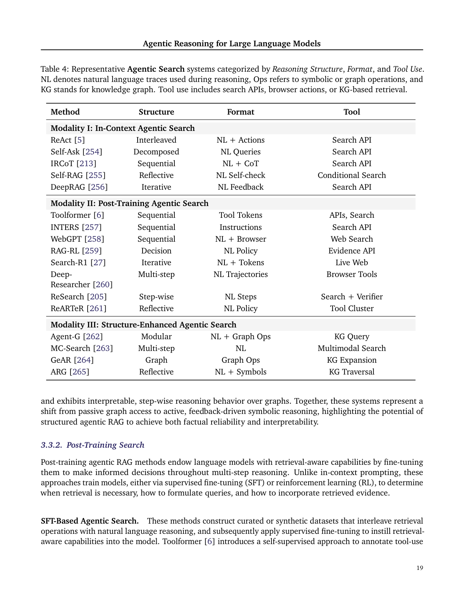
训练后智能体 RAG 方法通过微调，使语言模型在单步与多步推理中做出有检索意识的决策。基于 SFT 的智能体搜索：构造交错检索操作与自然语言推理的数据集，再应用 SFT 将检索意识注入模型（Toolformer [6]、INTERS [257]）。基于 RL 的智能体搜索：用反映答案质量、事实性或用户偏好的奖励信号优化检索意识行为。WebGPT [258] 引入奖励建模；Search-R1 [27] 与 Deep-Researcher [260] 进一步训练智能体动态发出检索动作（如在推理中途生成 <Search> token），在开放环境（如实时 Web）中运作；ReSearch [205]、ReARTeR [261] 不仅追求准确答案，也追求可解释、忠实的推理轨迹。
自我进化型智能体推理指智能体通过经验改进自身推理过程的能力。这一进化的核心是两个基本机制：反馈与记忆。反馈提供用于自我纠正与精炼的评估信号，使智能体能基于结果或环境响应修订推理策略。记忆则是存储、组织与综合过往交互的持久基底，支持跨任务的知识积累与复用。二者共同将推理从静态过程转变为能持续改进的、动态的、自适应的循环。在规划、搜索与工具使用等基础能力之上，自我进化型智能体整合反馈与记忆来精炼内部推理策略、调整决策并跨多样上下文泛化，往往无需显式外部监督。这一持续适应迈向终身推理，并为下一节的群体智能奠定基础。
智能体反馈机制使模型能够迭代地精炼其推理与动作，而非依赖一次性响应。通过自批评、验证器引导或可验证器重采样，这些方法模拟人类的试错学习，构成自主自我改进的基础。它们大致通过三种不同的反馈体制运作：(1) 反思式反馈，模型通过自评或验证修订推理；(2) 参数适应，反馈被固化进更新的模型参数；(3) 验证器驱动反馈，二元结果信号引导重采样而无内省。这些体制定义了从动态推断时适应、到参数更新的持久学习、再到外部信号高效纠正的连续谱系。
反思式反馈方法在不更新模型参数的情况下，通过在推断过程中修改推理来改善模型可靠性。早期自批评与理由精炼方法 [14,270] 通过显式的「生成—批评—修订」循环实现反思；近期框架 [271] 将反思式反馈扩展到单次推断幕之外，跨交互累积批评或失败案例。基于搜索的推理策略 [272,4,74] 通过生成并比较多个候选推理路径来提升可靠性，改进来自对替代方案的比较而非对单一轨迹的显式修订。基于分解的提示方法 [2,273] 将复杂问题重述为有序的简单子问题序列。
参数适应通过额外训练将反馈注入模型参数，产生能跨单幕推断泛化的持久性行为改变。轨迹级有监督微调 [274,103] 将反馈附着于中间推理轨迹而非仅最终答案；基于蒸馏的方法 [275] 在更强教师生成的高质量思维链或自纠正解上训练学生模型；偏好对齐方法 [276–278] 以比较判断形式注入反馈，通过奖励建模或 DPO 调整参数使偏好行为更可能。与推断时方法相比，参数适应以额外训练与灵活性下降为代价，换取跨任务的持久改进。
验证器驱动反馈利用外部成功/失败信号改进模型输出，而不修改模型的推理过程或参数。验证器（单元测试、约束检查器、模拟器或环境信号）评估候选输出是否满足预定正确性准则。基于重试的系统 [281,282] 反复采样候选输出直到通过验证（如程序合成与软件工程 [283–285]、具身与交互式智能体 [136,286]）。其局限在于反馈是非诊断性的——纠正单个输出却不解释失败原因或改变模型推理行为。
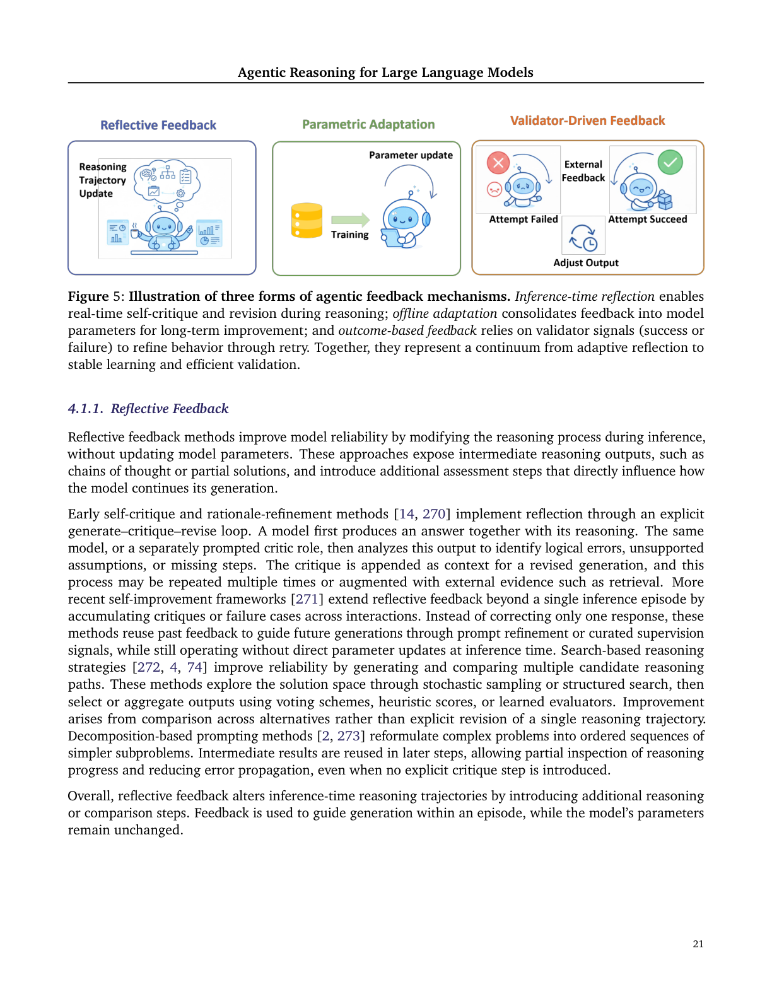
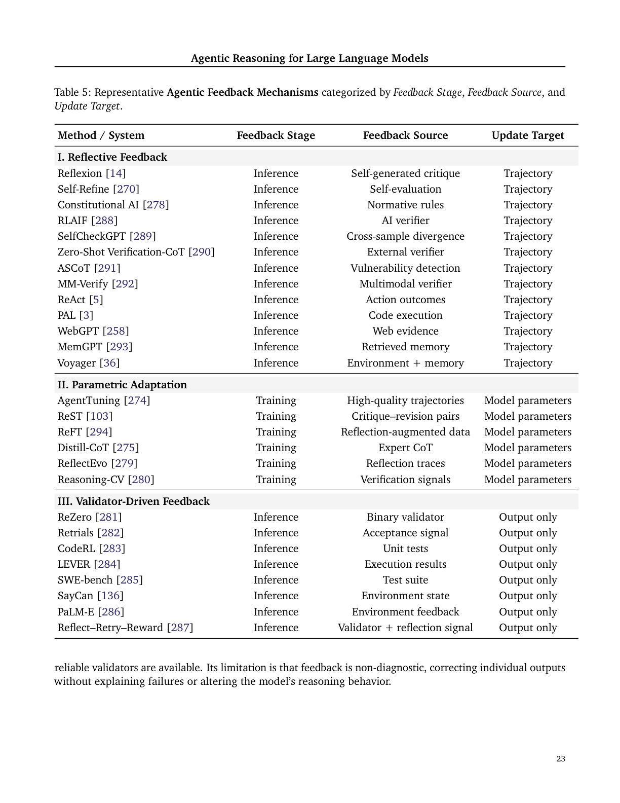
记忆增强型 LLM 智能体的近期进展将焦点从静态记忆存储转向更动态、交互式的机制，直接支撑智能体推理。记忆不再仅是扩展上下文窗口或存储历史输入，而日益被视为推理循环不可分割的组成部分，用于反思过往经验、引导未来行动、并动态适应复杂长程任务。形式上，智能体维护一个记忆模块，其中每个记忆条目可表示原始观测、摘要轨迹、子目标、工具调用轨迹或其他结构化元素。
事实记忆（Factual Memory）。传统 LLM 智能体记忆系统通常将记忆视为被动缓冲，用于存储对话历史或近期观测以应对上下文窗口限制。密集检索方法 [252,319,297]、LangChain/LLamaIndex [296] 的预定义模块、MemGPT [293] 等缓存式设计通常检索语义相似的过往内容以增强提示，但不影响内部推理。增强（如 RET-LLM [320]、LOCOMO 基准 [322,323]）进一步改善召回，但仍基本静态。
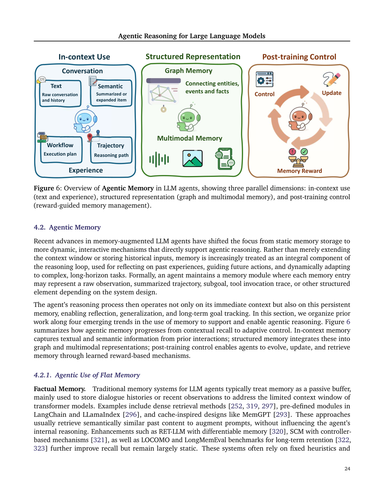
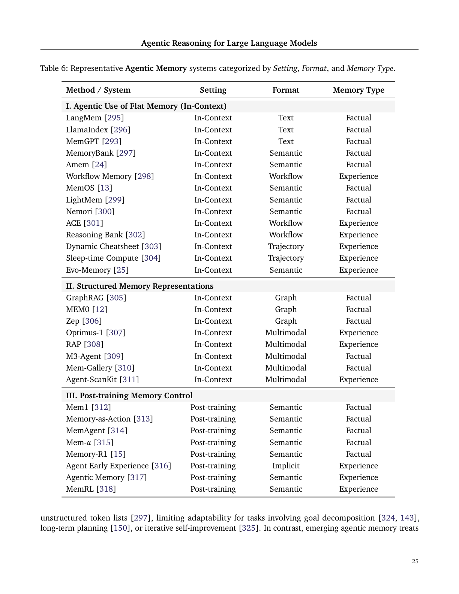
经验记忆（Experience Memory）。Workflow Memory [298] 追踪过程轨迹以支持计划恢复与一致推理；Sleep-time Compute 在用户交互前预计算并存储预期推理步骤；Dynamic Cheatsheet [303] 为黑盒模型装备外部记忆以存储可复用策略；Reasoning Bank [302] 聚焦复用失败推理轨迹；Evo-Memory [25] 在流式任务设定下基准测试自我进化记忆，凸显经验复用作为有状态长程智能体推理的核心能力。
除扁平记忆外，记忆的结构在支撑复杂推理中至关重要。近期工作日益探索结构化表示（语义图、工作流、层级树），并常扩展到多模态设定。基于图的表示（如 GraphRAG [305]、MEM0 [12]、Zep [306]）将记忆显式组织为动态知识图谱；MemTree [330] 用动态树结构层级组织信息；AutoFlow [331]、AFLOW [332]、FlowMind [333] 将推理工作流显式表示在记忆中。多模态基准（M3-Agent [309]、Optimus-1 [307]、RAP [308]）推动记忆进入多模态领域。
记忆系统也可由智能体自身的推理过程控制。MemAgent [314] 将记忆覆写形式化为强化学习问题；Mem1 [312] 提出端到端 RL 框架，智能体在轮次间维护紧凑共享内部状态；Memory-R1 [15] 引入双智能体设计（记忆管理器决定增删改、回答智能体提炼相关记忆）；Mem-α [315] 探索基于 RL 的多组件记忆构建控制；Memory-as-Action [313] 将记忆编辑（插入/删除/修改）直接整合进推理策略；Agentic Memory [317]、MemRL [318] 用 RL 优化经验记忆的获取与管理。这些系统标志着向「基于学习的记忆控制」转变。
近期进展将规划视为演化的能力，而非固定推理例程。智能体可自主生成任务、从自身反馈学习、并通过与环境迭代交互调整策略。代表性方向是自生成任务构造：SCA 让智能体在生成问题与求解问题间交替，复用成功轨迹微调 [334]；自奖励框架 [335,336] 让智能体评估自身输出以产生高质量训练信号；RAGEN [344]、DYSTIL [345] 将规划建模为 MDP 并用密集反馈优化策略。这些方法建立了自我改进规划循环。
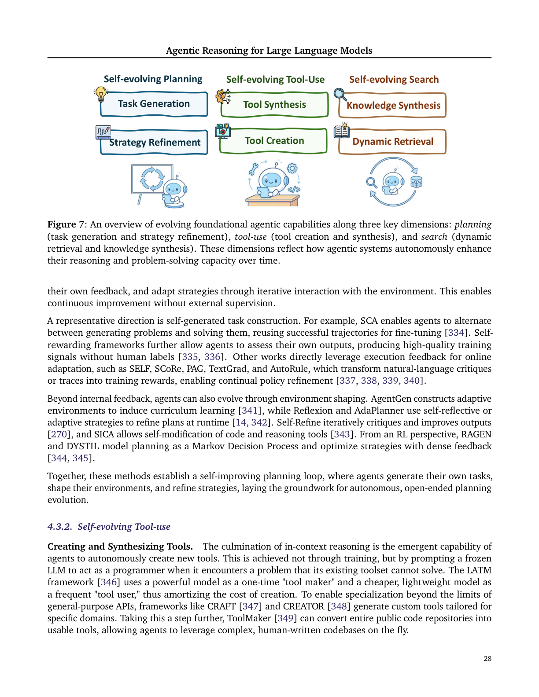
创建与综合工具。上下文推理的集大成是智能体自主创建新工具的涌现能力——并非通过训练，而是通过提示一个冻结 LLM 在遭遇现有工具集无法解决的问题时充当程序员。LATM [346] 用强模型作为一次性「工具制造者」、轻量模型作为频繁「工具使用者」；CRAFT [347]、CREATOR [348] 生成面向特定领域的定制工具；ToolMaker [349] 可将整个公共代码仓库转化为可用工具。
搜索在智能体推理中居于中心，使模型能在庞大且演化的记忆空间中检索、选择与综合相关知识。近期研究将搜索与记忆联结为共同进化循环：智能体在执行任务时持续更新记忆库，同时动态调整在该演化知识上的搜索方式。Reflexion [14] 让智能体批评自身推理轨迹并存储提炼出的洞见；Reasoning Bank [302]、上下文演化方法 [301] 显式重构记忆表示以使检索结果与演化的问题求解策略对齐；MemOS [13]、Memory-as-Action [313] 将搜索决策直接整合进推理策略。自我进化搜索将检索从静态工具转变为推理循环中持续自适应的组件。
在单智能体基础（推理支撑规划、搜索与工具使用的统一感知—行动循环）之上，多智能体推理将这些原则扩展到协作设定。在多智能体系统（MAS）中，多个推理智能体交互以联合求解复杂任务。智能体扮演互补角色（如 Manager 负责分解、Worker 负责执行、Verifier 负责评估），实现专业化与认知劳动分工。这种角色分化迈向群体智能的第一步。
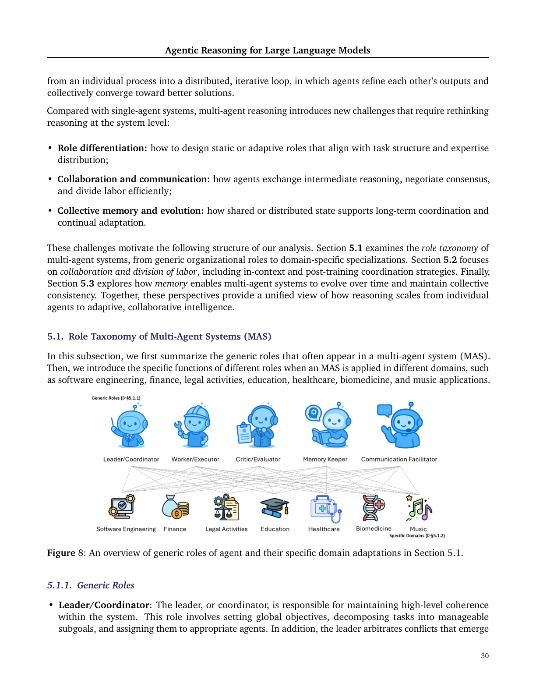
通用角色（Generic Roles）：① 领导者/协调者（Leader/Coordinator）：维护系统高层一致性，设定全局目标、分解子目标并分配给合适智能体，仲裁冲突；② 工作者/执行者（Worker/Executor）：调用外部工具、写/执行代码、检索文档等具体行动；③ 批评者/评估者（Critic/Evaluator）：负责质量保证，如 LLM-as-a-judge 设定下的事实性、安全性或风格对齐评估；④ 记忆守护者（Memory Keeper）：维护长期知识结构的持久记忆；⑤ 通信协调者（Communication Facilitator）：治理智能体间交换协议、管理通信带宽与共识构建。
领域特定角色（Domain-Specific Roles）：软件工程（架构师、开发者、代码审查者、CI 编排者、发布管理者；MetaGPT [17]、ChatDev [350]）；金融（分析师、风险管理者、交易/执行者、合规官；FinRobot [356]、FinCon [358]）；法律（咨询接待、专业律师、秘书、老板智能体；法庭模拟的法官/原告/被告/对抗律师 [361]）；教育（苏格拉底式导师、记忆调度者、课程设计 agent）；医疗（分诊、专科、医生、测量 agent）；生物医学（药物发现的 actor/evaluator/self-reflector；LIDDIA、DrugAgent、GenoMAS）；音乐（ComposerX 的指挥、旋律、和声、节奏 agent）。
协作与劳动分工是现代多智能体系统的核心组织原则。现有方法可沿两个维度组织：上下文协作聚焦于推断时指定或诱导的协调策略（无需额外训练）；训练后协作通过学习或搜索优化角色、交互结构或路由策略。此外，智能体路由可视为劳动分工的特例。
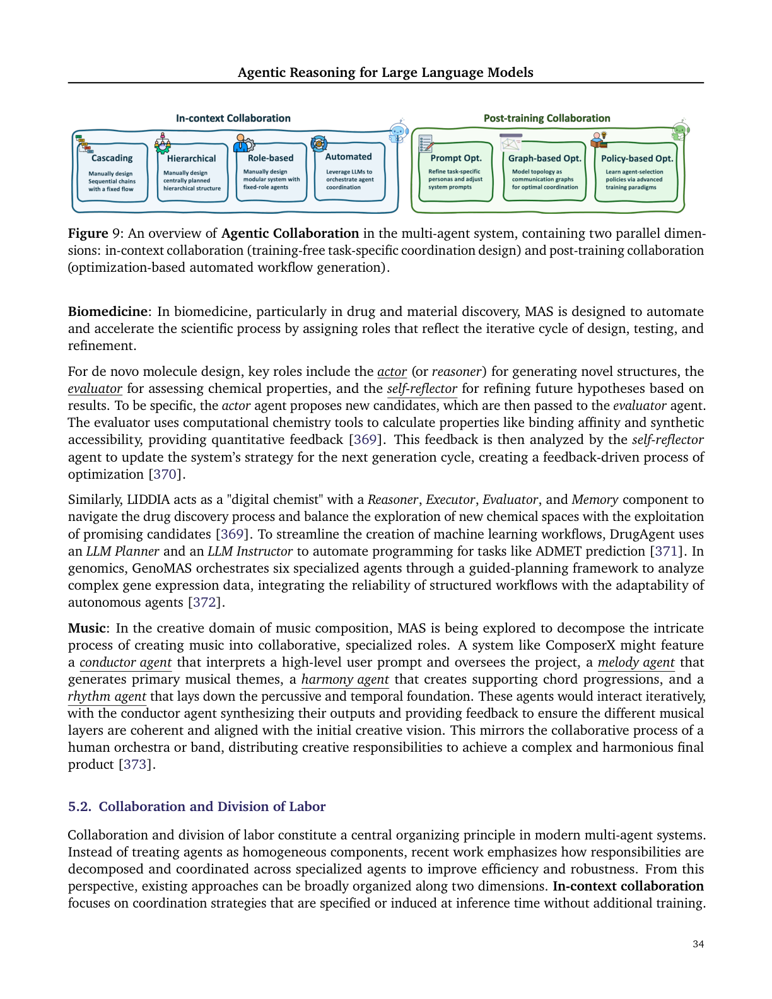
5.2.1 上下文协作。手动构建流水线（如 AgentOrchestra [374]、MetaGPT [17]、Collab-RAG [376]、Chain of Agents [378]）依赖预定义层级或固定工作流；LLM 驱动流水线（如 AutoML-Agent [382]、Magentic-One [383]、MetaAgent [385]）让 LLM 作为编排者动态分解目标、路由到角色专业化智能体或工具。Agent Routing（如 AgentRouter [386]、Talk to Right Specialists [387]）将路由显式建模为决策层。Theory-of-Mind 增强协作（如 Hypothetical Minds [389]、MindForge [390]、ToM-agent [392]）为智能体装备关于他者信念与心智状态推理的能力。
5.2.2 训练后协作。多智能体提示（角色/人格）与交互拓扑的设计对系统能力至关重要，近期研究在训练后阶段优化这些组件，分为提示优化与拓扑优化两类。多智能体提示优化（AutoAgents [16]、SPP [18]、DSPy Assertions [394]、MASS [395]）。拓扑优化的两条路径：① 图基拓扑生成——图生成（GommFormer [397]、G-designer [398]、MCGD [399]）、图剪枝（AgentPrune [400]、AGP [401]、G-Safeguard [402]）、拓扑搜索（AFlow [332]、MASS [395]、GPTSwarm [68]、DynaSwarm [404]）；② 基于策略的拓扑生成——通过 SFT/RL 学习选择后续智能体的策略，如相对优势策略学习（MAGRPO [409]、MHGPO [410]、COPY [26]）、LLM 生成先验引导（LGC-MARL [411]、LAMARL [412]、MAPoRL [413]、COPPER [326]、SIRIUS [414]）、人类偏好信号（M3HF [416]、O-MAPL [417]）。
自我进化智能体使单个模型通过交互与反馈持续改进，而许多真实应用需要由多智能体协作支撑的群体智能。因此，近期研究将自我进化从单智能体（规划、工具使用、搜索进化）扩展到多智能体共同进化，其适应涌现于分布式智能体之间。多智能体记忆须沿架构、拓扑、内容与管理维度共同进化。目标从优化单个智能体能力，转向改进多智能体在复杂长程任务上的集体表现。
从单智能体到多智能体共同进化，拓宽了适应的空间维度，但时间维度同样关键——即智能体在交互中「何时、多快」适应。这引出幕内测试时进化（intra-test-time evolution）与幕间测试时进化（inter-test-time evolution）。幕内进化指智能体在任务执行中适应与改进（Reflexion [14]、AdaPlanner [342]、测试时 RL [433,434]）；幕间进化将自适应扩展到跨任务学习（SELF [337]、STaR [435]、Quiet-STaR [436]、RAGEN [344]、DYSTIL [345]）。机制从基于奖励或反思的单独适应，演进为多智能体 RL 与博弈论共同优化。
多智能体 LLM 系统在记忆设计上比单智能体更具挑战。我们按四个维度分类：① 架构（层级与异构设计，如 G-Memory [425]、Intrinsic Memory Agents [442]）；② 存储拓扑（集中式 SEDM [426]、分布式 Collaborative Memory [427]、无管控汇聚 Memory Sharing [444]）；③ 内容（语义分解 MIRIX [328]、任务分解 LEGOMem [428]、认知阶段分解 MAPLE [445]）；④ 管理策略（遗忘式 Lyfe Agents [429]、学习式 AGENT-KB [430]）。当前讨论：训练后记忆联合优化仍属开放问题。
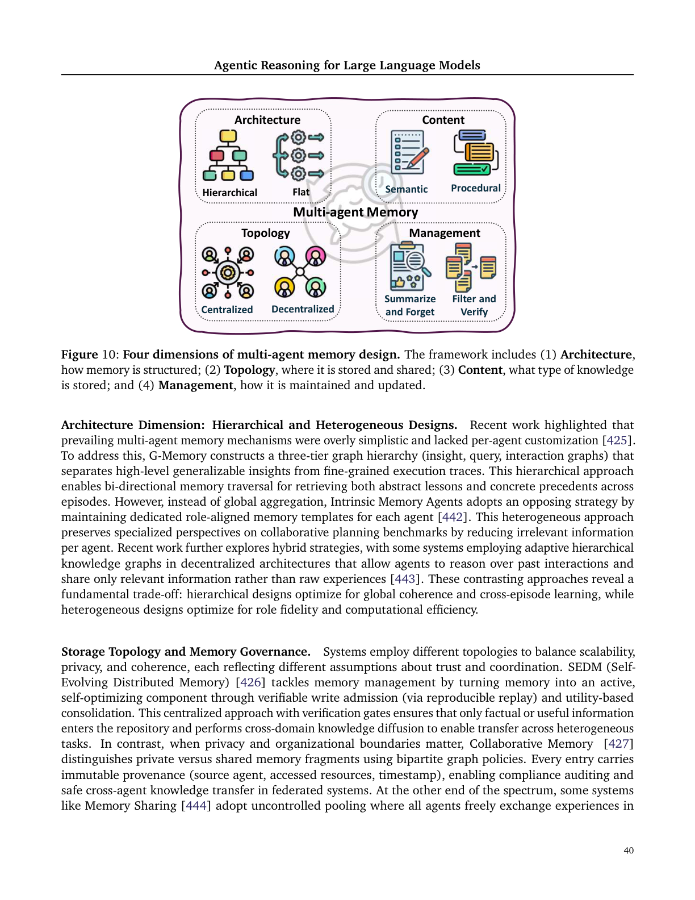
近期进展将多智能体系统从固定手工设计的协调，转向使智能体随时间进化的训练范式。通过交互、反馈与共享记忆，智能体集体改进，而非孤立或独立优化。通过交互与内在反馈的共同进化：Multi-Agent Evolve [446] 实例化含 Proposer/Solver/Judge 三角色的闭环共同进化框架；CoMAS [451] 强调从多智能体讨论动态中提取内在交互奖励。面向集体适应的多智能体强化微调：MARFT [447] 形式化多智能体强化微调；Stronger-MAS [448] 将 On-policy RL 适配到多角色多轮设定；MAPoRL [413] 提出多智能体训练后共同训练。角色专业化与联合信用分配：MALT [452] 训练异构智能体序列流水线；MARS [453] 联合训练 System 1/2 智能体。偏好与对齐驱动的多智能体进化：偏好式多智能体 RL [449]、Alignment Waltz [454] 将对齐视为生成智能体与反馈智能体间的协作共同进化。
基于前述三层分类（基础、自我进化、群体），本节考察这些能力如何在真实应用中显现。我们调研若干关键领域的代表性推理赋能型智能体系统（如图 11）：数学探索与 vibe 编程（§6.1）、科学发现（§6.2）、机器人（§6.3）、医疗（§6.4）、自主 Web 探索与研究（§6.5）。每个领域呈现独特的推理形式，受数据模态与环境约束影响。各小节围绕三层组织：(1) 核心能力（规划、工具使用、搜索）；(2) 自我进化能力（反馈、反思、记忆）；(3) 群体多智能体推理（协作与专业化）。
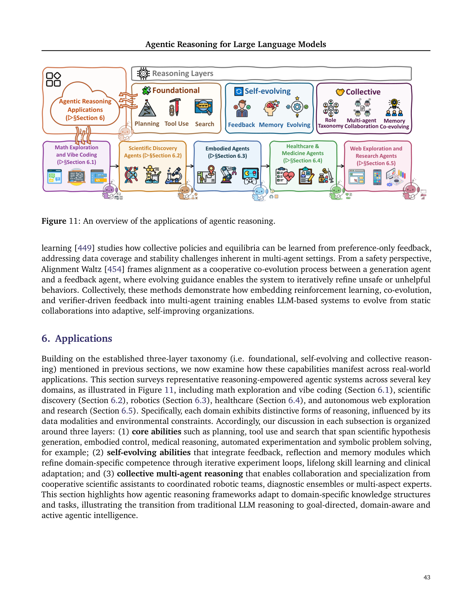
数学与代码历来是评估 AI 推理最广泛使用的两大领域，二者都要求结构化符号操作与精确多步演绎。传统基准（GSM8K、MATH、AIME、FrontierMath）日益饱和，难以区分现代高性能模型。在智能体推理范式下，二者正从静态问题求解转向强调探索、适应与协作的动态过程：数学中智能体可进行竞赛级推理、提出猜想、构造辅助引理；LLM 也通过 agentic coding 与 vibe coding 重塑编程（Copilot、Cursor 等）。
规划。数学发现中，Davies et al. [463] 引导人类数学家提出中间对象与探索方向；Trinh et al. [29] 将奥赛几何分解为构造、引理生成与验证的结构化多步过程；程序搜索方法 [30] 迭代精炼候选程序与数学结构。代码智能体中，CodeChain [464]、CodeAct [99] 引入显式规划；GIF-MCTS [470] 融入蒙特卡洛树搜索；VerilogCoder [471] 采用图结构规划。
工具使用。数学推理系统深度整合外部计算工具：Thakur et al. [473] 在 Lean 证明助手中操作；生成式建模 [475] 用数论工具检查候选；几何系统 [29,476] 集成自动几何求解器。代码智能体中，Toolformer [6]、ToolCoder [477] 学习调用 API；CodeAgent [479] 整合搜索、文档阅读、符号导航与代码执行；ROCODE [480]、CodeTool [481] 改进工具反馈循环。
搜索与检索。数学发现中，程序搜索 [30] 将发现视为在程序空间中导航；几何系统 [29,460] 在构造/配置/高维多胞形上搜索。代码生成中，RepoHyper [482]、CodeNav [79] 检索可复用代码段；知识图谱仓库表示 [484]、cAST [485] 提升检索质量。
智能体反馈与反思。数学发现中，程序搜索 [30] 的执行反馈产生反例或确认以迭代精炼猜想；几何自动检查器 [29,476] 提供正确性信号；形式推理 [474] 依赖验证、证明检查与模型检查。代码智能体中，Self-Edit [487]、Self-Repair [488]、LeDeX [489] 将执行信号与修复结合；Self-Refine [270]、Self-Debug [491] 将反思作为记忆复用。
记忆。数学智能体常依赖隐式持久状态（如 Lean 中演化的证明状态 [473]、猜想历史 [30,461]）。代码智能体中，Self-Collaboration [492] 引入黑板记忆；L2MAC [493]、Cogito [494] 将上下文组织为专用寄存器或层级记忆单元以克服上下文窗口限制。
数学发现框架常将推理组织为明确定义的多智能体/多组件工作流（如 [460] 的生成—评估—精炼；[461] 的猜想/反例/精炼模块）。代码生成多智能体系统从简单角色流水线（Self-Collaboration [492]、AgentCoder [495]）演进到自适应协作（PairCoder [496]、SoA [498]、SEW [502]、EvoMAC [351]），并出现协作优化方法（Lingma SWE-GPT [503]、CodeCoR [504]）。
科学发现智能体旨在通过将 LLM 与领域模拟器、实验室自动化和最新文献耦合，加速从假设生成到实验执行的整个科研生命周期。这些系统将决策锚定在可验证过程中，同时处理异构数据、安全约束与长程目标。
规划。科学智能体利用推理增强的规划将研究目标分解为步骤，决定调用哪个工具/模拟器，并随证据到达修订计划。ProtAgents [507] 用规划者智能体制定蛋白质分析计划并用批评者反馈持续修改；Eunomia [508] 用 ReAct 式工作流做上下文推理；MatExpert [35] 用思维链 LLM 生成逐步转化路径；Curie [509] 用严谨引擎将 Architect LLM 的规划置于可复现性检查门之后；Biomni [40] 将推理约束在动态构建的生物医学动作空间内。
工具使用。科学智能体可在「何时调用、调用哪个、如何填参并验证」上做决策。SciAgent [510] 将工具增强推理形式化为四步（规划、检索、基于工具的动作、执行）；ChemCrow [33] 链接专家化学工具使中间计算成为下一步前提；CACTUS [511]、ChemToolAgent [512]、CheMatAgent [513] 逐步学习工具使用（含 MCTS + 步级微调）；TxAgent [514] 在 211 个审查工具上扩展治疗推理；AgentMD [515] 构建两阶段工具记忆。执行层（Organa [522]、AtomAgents [523]、Chemist-x [524]）将高层计划桥接到实验硬件。
搜索与检索。科学智能体将检索提升为有意识的推理步骤：BioDiscoveryAgent [527] 在闭环中拉取文献与中期实验结果；DrugAgent [528] 协调知识图谱查询、文献搜索与 ML 预测；ARIA [529]、AI Scientist-v2 [530] 用树搜索在假设形成与写作中主动查询文献。RAG 框架（PaperQA [516]、PaperQA2 [517]、LLaMP [518]）将外部源作为 LLM 上下文与推理的主要输入。
记忆。ChemAgent [532] 实现自更新库，将化学问题分解为可复用技能；MatAgent [533] 区分短期记忆（近期组成与反馈）与长期记忆（成功设计及其推理轨迹）。智能体反馈与反思。Scientific Generative Agent [525] 将离散 LLM 提议与内循环模拟绑定，仅当证据改善时才推进；ChemReasoner [534] 用量子化学反馈对想法空间做启发式搜索；Curie [509] 将严谨检查嵌入控制流；LLMatDesign [535]、NovelSeek [536] 将显式自反思构建进材料工作流。
科学发现的多智能体框架将劳动分配给专业化 LLM 驱动角色。ProtAgents [507] 含文献检索、结构分析、物理模拟与结果分析智能体；PiFlow [538] 用原则感知的不确定性约减多智能体循环；AtomAgents [523] 将角色专业化用于合金发现；CellAgent [526] 用规划者/执行者/评估者框架；ARIA [529] 提出四智能体框架（scout/filter/synthesizer/procedure-drafter）；Virtual Lab [540] 用于纳米抗体设计。
具身智能体将推理超越文本，锚定在机器人感知、操作与导航中。通过将 LLM 嵌入机器人与模拟身体，这些智能体应对真实泛化、持续适应与多模态落地。
规划。SayCan [136] 将语言描述映射到技能可用性估计，SayPlan [541] 用 3D 场景图对齐目标；EmbodiedGPT [542] 用视频 CoT 标注训练；DEPS [544] 引入交互式规划循环。多模态推理轨迹（Embodied CoT [545]、Fast ECoT [546]、Cosmos-Reason1 [547]、CoT-VLA [548]、Emma-X [549]）显式对齐感知与动作。强化学习增强规划：Robot-R1 [550]、ManipLVM-R1 [551]、Embodied-R [38]、VIKI-R [552]。
工具使用。GSCE [553] 绑定技能 API 与约束；MineDojo [554] 链接互联网规模语料；Physical AI Agents [34] 引入模块化架构与 RAG 设计模式；Matcha [450] 将环境本身视为 API。执行模块（SayCan [136]、LEO [555]、Hi Robot [556]、Gemini Robotics [557]、Octopus [558]）将高层指令转为连续运动命令；CaPo [559]、COHERENT [560]、MP5 [561] 耦合反应式反射与语言引导策略。
搜索与检索。L3MVN [562] 查询语义地图选择前沿；SayNav [563]、SayPlan [541] 构建 3D 场景图并搜索相关子图；ReMEmbR [564] 维护结构化时空记忆；Embodied-RAG [565]、EmbodiedRAG [37] 将经验与 3D 场景图作为非参数记忆；MLLM-as-Retriever [567] 训练多模态检索器排序过往轨迹。
记忆。许多系统将近期观测缓存于情景缓冲，同时将长期语义摘要于结构化图（household planning [568]、混合多模态记忆 [307]）；HELPER-X [569] 索引发现的技能；BrainNav [570] 维持生物启发双图记忆；Ella [571] 维护长期多模态记忆。智能体反馈与反思。Matcha [450] 将对象/场景视为交互信息源；FAMER [572]、KnowNo [573]、Octopus [558] 用不确定性或环境反馈适配；MindForge [390] 引入心智理论式视角反馈；Optimus-1 [307]、EMAC+ [576]、Voyager [36] 用结构化反思工作流在线精炼计划。
多智能体协作使具身系统更高效分工。SMART-LLM [577]、CaPo [559] 分解与分配子任务；COHERENT [560] 跨异质机器人部署提议—执行—反馈—调整循环；MindForge [390] 装备显式心智理论；EMAC+ [576]、COMBO [578]、VIKI-R [552] 用视觉反馈持续精炼；RoCo [579] 展示角色协商与灵活协议。
医疗与医学智能体旨在支撑完整临床决策流水线（从症状分诊到治疗规划），将 LLM 与结构化病历、医学本体与专家指南集成，须在严格安全约束、多模态证据与法律论证下运作。
规划。肿瘤学决策系统 [580] 编排专用工具与指南引用；EHRAgent [581] 将多表 EHR 推断分解为代码执行步骤；PathFinder [365] 提出多智能体多模态组织病理学工作流；MedAgent-Pro [368] 提出先生成疾病级诊断计划再分派工具模块的分层工作流；DoctorAgent-RL [584]、DynamiCare [585] 用 RL 自适应规划。工具使用。MedOrch [582] 模块化架构可免重训纳入新 API；TxAgent [514] 集成 200+ 药理工具；AgentMD [515] 利用 2000+ 可执行临床计算器；MeNTi [587] 支持嵌套工具调用；VoxelPrompt [588]、超声机器人控制器 [589]、MedRAX [591] 将计划转为具体执行。搜索与检索。MeNTi [587] 桥接多步医学计算器；EHRAgent [581] 在 EHR 上动态执行代码；CLADD [596] 检索分子图与既往实验结果；MedReason [597] 发起针对性知识图谱子查询。
记忆。流行病建模智能体 [598] 维护时间接触史追踪感染链；MedAgentSim [595] 存储经验史并精炼诊断策略；EHRAgent [581] 记录中间计算；EvoPatient [599]、AIPatient [594] 维持演化临床状态；MedOrch [582] 含可查询的临床知识图谱 agent。智能体反馈与反思。DynamiCare [585] 在观测 contradicts 前计划时更新策略；DoctorAgent-RL [584] 从咨询奖励优化提问策略；MedAgentGym [593] 通过执行与评分强制正确性；EHRAgent [581]、MeNTi [587] 的工具调用传播执行反馈。
协作决策框架：MDAgents [364] 依任务复杂度自动分配协作结构；DoctorAgent-RL [584] 用多智能体 RL 优化医患对话；AMSC [600] 探索分阶段多专科鉴别诊断对话。模拟驱动协作：MedAgentSim [595]、EvoPatient [599] 共同进化医患 agent；DynamiCare [585] 组建专科 agent 团队迭代查询患者系统；MedAgents [601]、CLADD [596]、GMAI-VL-R1 [602] 展示零样本协作与 RAG 增强的多智能体推理。
Web 智能体、GUI 智能体与自主研究智能体构成三条互联但不同的智能体推理轨迹：Web 智能体专精于导航在线资源；GUI 智能体进一步直接操纵软件界面；自主研究智能体位于层级顶端，配对 LLM 推理者、工具链与元循环，驱动假设生成、数据综合与论文写作。其核心是自主性递进：Web 检索证据→GUI 在软件界面落地动作→自主研究智能体端到端编排完整科研流程。
规划（Web）。WebGPT [258] 微调 GPT-3 通过文本浏览器作答；SEEACT [604]、AutoWebGLM [605] 深化规划范式；Agent Q [113] 整合引导式 MCTS、自批评与离策略偏好优化；WebRL [437]、WebAgent-R1 [28]、DeepResearcher [260] 用 RL 提升决策。GUI 规划：OS-Copilot [613]、Agent S [85]、InfiGUIAgent [614]、MobA [615]、PC Agent [616]、OS-ATLAS [617] 等。自主研究规划：Agent Laboratory [634] 分文献综述、实验、报告三阶段；GPT Researcher [635] 用计划→研究→写作循环；Chain of Ideas [636]、IRIS [637] 用 MCTS 探索假设。
工具使用（Web）。WebVoyager [638] 系统化多模态执行；BrowserAgent [639] 将动作空间拟人化并配记忆；WALT [640]、WebDancer [641]、WebShaper [642] 将工具使用推向工具发现。GUI 工具：AutoDroid [643]、AutoDroid-V2 [644]、MobileExperts [645]、AgentStore [646]、OS-Copilot [613]、OS-ATLAS [617]、SeeClick [220]。自主研究工具：Agentic Reasoning [223]、Webthinker [647]、PaperQA [516]、Scideator [648]、DeepResearcher [260]、MLR-Copilot [649]、Dolphin [650]、The AI Scientist [651]、NovelSeek [536]。
执行组件将高层推理锚定于代码、模拟或实验室协议：Agent Laboratory [634] 执行声明式配置中的实验；Agentic Reasoning [223] 集成编码智能体执行 Python；MLR-Copilot [649] 将研究计划转为可运行实现；Dolphin [650]、The AI Scientist [651]、NovelSeek [536] 闭环自动化 ML 实验。
搜索与检索（Web）。WebExplorer [606]、WebSailor [41]、INFOGENT [652]、RaDA [653]、GeAR [264]、WebRAGent [654] 在动态环境中定位、综合与重构网络级信息。GUI 检索：Synapse [655]、Learn-Act [656]、MobileGPT [657]、TongUI [658]、RAG-GUI [659]。研究搜索：WebThinker [647]、DeepResearcher [260]、PaperQA [516]、GPT Researcher [635]、Chain of Ideas [636]、Scideator [648]。
记忆。AWM [298] 从成功轨迹归纳可复用工作流；ICAL [660] 将噪声轨迹提炼为存储的多模态经验抽象；BrowserAgent [639] 在上下文中维护显式历史；LiteWebAgent [662] 将规划、记忆与树搜索作为模块化组件。GUI 智能体采用显式记忆（MobileGPT [663]、CoM [664]、MobA [615]、MGA [665]、Mobile-Agent-E [666]、Mirage-1 [667]）。自主研究智能体依赖长期记忆（Agent Laboratory [634]、GPT Researcher [635]、Chain of Ideas [636]、AI Scientist-v2 [530]）。
智能体反馈与反思。Web 智能体：Agent Q [113] 结合引导式 MCTS 与自批评；ReAP [668] 将反思作为检索问题；Agent-E [669] 自动验证并触发自精炼；Recon-Act [670]、INFOGENT [652]、WINELL [671]、WebSeer [672] 用聚合或反思反馈迭代精炼。GUI 智能体：GUI-Reflection [674]、HAR [675]、MobileUse [676]、InfiGUIAgent [614]、Mobile-Agent-E [666] 集成显式反思以批评并修复计划。自主研究智能体：CycleResearcher [677] 配审查者 agent 做偏好训练；MLR-Copilot [649]、Dolphin [650]、DeepResearcher [260]、Agentic Deep Research [678] 从结果中学习改进。
Web 智能体：WebPilot [679] 用全局规划 agent 分解任务、局部 MCTS 执行者求解；INFOGENT [652] 组织 Navigator/Extractor/Aggregator；Recon-Act [670]、PAE [612]、Agent-E [84]、Plan-and-Act [93]、Agentic Web [680]。GUI 智能体：COLA [681]、Mobile-Agent-v2 [682]、Mobile-Agent-E [666]、Mobile-Agent-V [683]、MobileExperts [645]、SWIRL [684]、PC Agent [616]。自主研究智能体：AgentRxiv [685] 协调作者/审查/编辑 agent；ARIA [529]、CAMEL [531]、Coscientist [686]、TAIS [539]。
智能体推理已通过快速增长的一批基准得到评估，但现有套件常在「核心能力是什么」上各异（如工具调用精度、长上下文记忆保留、多智能体协调质量）。为提供连贯视图，我们从两个互补视角组织基准：先总结隔离核心机制的基准，再回顾应用级基准（评估真实领域端到端行为）。
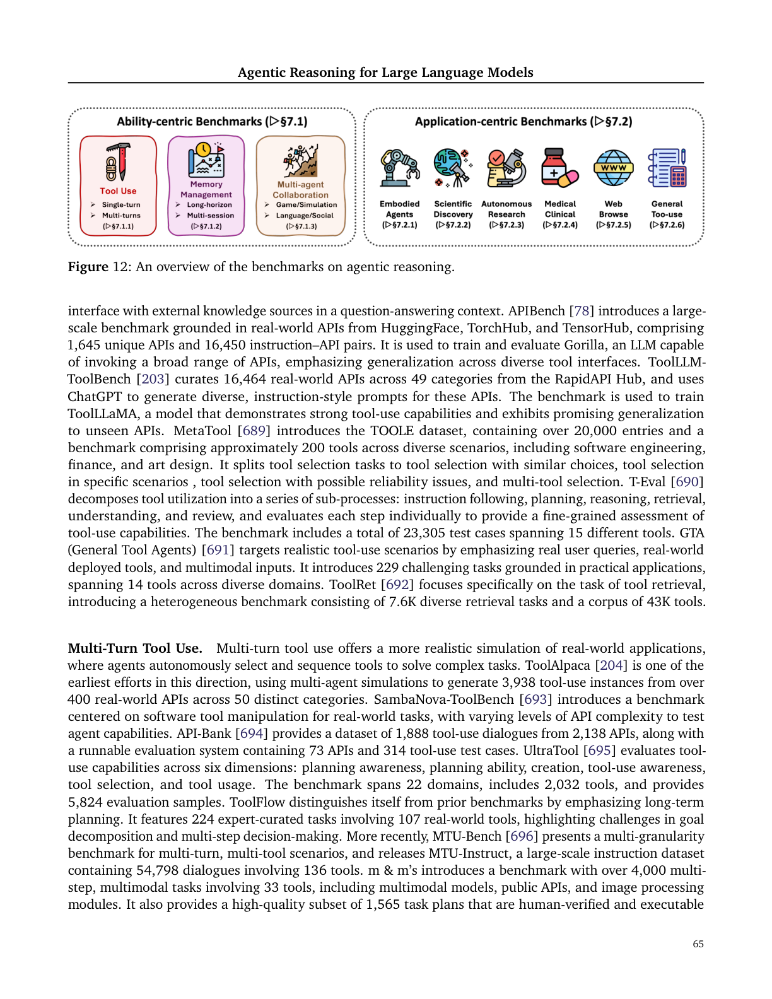
机制级基准将智能体行为分解为少量反复出现的原语（工具使用、搜索、记忆与规划、多智能体协调），便于将性能变化归因于具体组件。
7.1.1 工具使用。单轮工具使用：ToolQA [688]、APIBench [78]、ToolLLM-ToolBench [203]、MetaTool [689]、T-Eval [690]、GTA [691]、ToolRet [692]。多轮工具使用：ToolAlpaca [204]、SambaNova-ToolBench [693]、API-Bank [694]、UltraTool [695]、ToolFlow、MTU-Bench [696]、m & m's。
7.1.2 搜索。单模态搜索：WebWalker [697]、InfoDeepSeek [698]、Mind2Web 2 [50]、RAVine [699]、WideSearch [700]、DeepWideSearch [701]、MedBrowseComp [702]、FinAgentBench [703]、LocalSearchBench [704]。多模态搜索：MMSearch [705]、MMSearch-Plus [706]、MM-BrowseComp [707]、BEARCUBS [708]、PaperArena [709]、Video-BrowseComp [710]、VideoDR [711]。
7.1.3 记忆与规划。长程情景记忆：PerLTQA [712]、ELITR-Bench [713]、Multi-IF [714]、MultiChallenge [715]、TurnBench-MS [716]、StoryBench [717]、MemBench [718]、MMRC [719]。多会话召回：LOCOMO [322]、MemSim [720]、LONGMEMEVAL [323]、REALTALK [721]、MemoryAgentBench [722]、Mem-Gallery [310]、Evo-Memory [25]。规划与反馈：ALFWorld [48]、PlanBench [723]、ACPBench [724]、TEXT2WORLD [725]、REALM-Bench [726]、TravelPlanner [727]、FlowBench [728]、UrbanPlanBench [729]。
7.1.4 多智能体系统。基于游戏的 RL 评估：MAgent [730]、Pommerman [731]、SMAC [732]、MineLand [733]、TeamCraft [734]、Melting Pot [735]、BenchMARL [736]、Arena [737]。仿真中心真实评估：SMARTS [738]、Nocturne [739]、MABIM [740]、IMP-MARL [741]、POGEMA [742]、INTERSECTIONZOO [743]、REALM-Bench [726]。语言、通信与社会推理：LLM-Coordination [744]、AVALONBENCH [745]、Welfare Diplomacy [746]、MAgIC [747]、BattleAgentBench [19]、COMMA [748]、IntellAgent [749]、MultiAgentBench [21]。
机制中心基准有助于隔离单能力，但真实部署要求这些能力在真实约束（部分可观测、长程依赖、安全关键决策）下协同。应用级基准评估端到端表现：
7.2.1 具身智能体：AgentX [750]、BALROG [751]、ALFWorld [48]、AndroidArena [752]、StarDojo [753]、MindAgent [754]、NetPlay [755]、OSWorld [756]。
7.2.2 科学发现智能体：DISCOVERYWORLD [757]、ScienceWorld [758]、ScienceAgentBench [759]、The AI Scientist [651]、LAB-Bench [760]、MLAgentBench [761]。
7.2.3 自主研究智能体：WorkArena [762]、WorkArena++ [763]、OfficeBench [764]、PlanBench [723]、FlowBench [728]、ACPBench [724]、TRAIL [765]、CLIN [767]、Agent-as-a-Judge [768]、InfoDeepSeek [698]。
7.2.4 医疗与临床智能体：AgentClinic [769]、MedAgentBench [770]、MedAgentsBench [771]、EHRAgent [581]、MedBrowseComp [702]、ACC [772]、MedAgents [601]、GuardAgent [773]。
7.2.5 Web 智能体：WebArena [45]、VisualWebArena [46]、WebVoyager [638]、Mind2Web [50]、WebCanvas [774]、WebLINX [775]、BrowseComp-ZH [776]、LASER [777]、WebWalker [697]、AutoWebBench [605]。
7.2.6 通用工具使用智能体：GTA [691]、NESTFUL [778]、CodeAct [99]、RestGPT [225]、Search-o1 [23]、Agentic RL [779]、ActionReasoningBench [780]、R-Judge [781]。
本节强调源于以用户为中心的个性化、长程交互与信用分配、基于世界模型的推理、多智能体协作与训练、潜在内部推理，以及真实环境中自主智能体系统治理的开放问题。
8.1 以用户为中心的智能体推理与个性化。指智能体通过随时间建模用户特征、偏好与交互历史，将推理与行动适配到特定用户的能力。这要求动态推断演化中的用户意图、适应目标与行为风格变化，并依显式/隐式用户反馈调整决策，引入非平稳目标与长程信用分配挑战。
8.2 来自扩展交互的长程智能体推理。核心开放挑战是跨扩展交互的鲁棒长程规划与信用分配。ReAct、ToT 改善短程推理，但长任务错误快速累积；RL 训练智能体（WebRL、Agent-R1）依赖重度工程化的领域特定奖励且基本将幕独立处理；过程感知方法尝试构造更细粒度信用信号但仍环境特定。核心问题是如何跨 token、工具调用、技能与记忆更新分配信用，并将此类学习泛化到长序列的幕与任务。
8.3 基于世界模型的智能体推理。世界模型智能体旨在通过学习内部模拟与前瞻来缓解短视推理。DreamerV3、LLM 智能体适配世界模型到 Web/代码/GUI，但当前设计依赖特定表示、多在短程或环境特定数据上训练，存在校准与泛化担忧。开放问题是如何在非平稳环境中联合训练、更新与评估世界模型，以及如何评估其对下游规划可靠性的因果影响。
8.4 多智能体协作推理与训练。多智能体协作通过角色专业化与劳动分工扩展智能体推理，但多数协作结构仍手工设计；近期多智能体 RL 开始将协作本身视为可训练技能，但群体级信用分配仍知之甚少；扩展到更大规模引入拓扑适应、协调开销与安全挑战。开放问题是如何学习在部分可观测与对抗条件下仍鲁棒的自适应、可解释协作策略。
8.5 潜在智能体推理（Latent Agentic Reasoning）。在内部潜在空间而非显式自然语言/符号轨迹中执行规划、决策与协作，可提升效率与可扩展性，但牺牲可解释性与可控性。开放问题是如何设计学习目标、探测方法与评估基准，使潜在智能体推理既有效又可审计。
8.6 智能体推理的治理。治理是作用于工具、环境与他智能体的自主智能体系统的跨切挑战。除标准 LLM 安全问题外，长程规划、持久记忆与真实行动执行引入新风险，失败可能源于跨时间与组件的交互，使归因与审计困难。现有基准与护栏多聚焦短程行为，规划时失败与多智能体动态未被充分探索。核心开放问题是发展能联合处理模型级对齐、智能体级策略与生态级交互的治理框架。